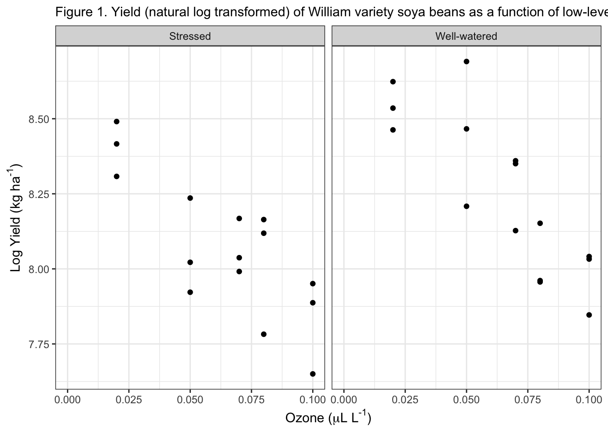

The data has a balanced fully-factorial design. There are 5 columns and 30 rows. The categorical variable is water stress, measured on 2 levels, and the continuous variable is ozone. The response variable is soybean yield. It has a randomized design (no blocking).
Stress SO2 O3 Forrest
Stressed :15 Min. :0.00000 Min. :0.020 Min. :2158
Well-watered:15 1st Qu.:0.00000 1st Qu.:0.050 1st Qu.:3245
Median :0.02000 Median :0.070 Median :3478
Mean :0.02667 Mean :0.064 Mean :3699
3rd Qu.:0.06000 3rd Qu.:0.080 3rd Qu.:4327
Max. :0.06000 Max. :0.100 Max. :5573
William
Min. :2101
1st Qu.:2889
Median :3428
Mean :3635
3rd Qu.:4263
Max. :5947
Log transform yields for analysis
Just looking at the William soybean variety for now.
expression(paste()) is used to render the mathematical symbols of the units nicely. Paste combines rendered (such as turning mu into the correct symbol) and unrendered parts of the line together. Useful for mixed formats in one string.
Plotting yield versus ozone, categorized by water stress.
Fig13_0 <- case1402 |>ggplot() +geom_point(aes(x = O3, y =log(William))) +facet_wrap(. ~ Stress) +labs(x = xlabel, y = ylabel, subtitle ="Figure 1. Yield (natural log transformed) of William variety soya beans as a function of low-level ozone and water stress.") +xlim(0, 0.1) +theme_bw() Fig13_0

Today’s exercise: linear model analysis
1. Fit a (ANOVA-type) linear model that analyses the yield of the William soya beans (log transformed) as a function of the effects of water stress.
stressANOVA <-lm(log_William~Stress, data = case1402)anova(stressANOVA)
Analysis of Variance Table
Response: log_William
Df Sum Sq Mean Sq F value Pr(>F)
Stress 1 0.23764 0.237642 3.8729 0.05905 .
Residuals 28 1.71810 0.061361
---
Signif. codes: 0 '***' 0.001 '**' 0.01 '*' 0.05 '.' 0.1 ' ' 1
Effect of water stress on William soybean yield is not statistically significant. Insufficient evidence to reject H0.
2. Fit a (regression-type) linear model that analyses the yield of the William soya beans (log transformed) as a function of the effects of ozone.
ozoneRegression <-lm(log_William~O3, data = case1402)summary(ozoneRegression)
Call:
lm(formula = log_William ~ O3, data = case1402)
Residuals:
Min 1Q Median 3Q Max
-0.34304 -0.08886 -0.00583 0.11007 0.42534
Coefficients:
Estimate Std. Error t value Pr(>|t|)
(Intercept) 8.62234 0.07957 108.356 < 2e-16 ***
O3 -7.14080 1.14380 -6.243 9.54e-07 ***
---
Signif. codes: 0 '***' 0.001 '**' 0.01 '*' 0.05 '.' 0.1 ' ' 1
Residual standard error: 0.1709 on 28 degrees of freedom
Multiple R-squared: 0.5819, Adjusted R-squared: 0.567
F-statistic: 38.98 on 1 and 28 DF, p-value: 9.54e-07
The effects of ozone on William soybean yield are statistically significant (P<0.05).
3. Fit (ANCOVA-type) linear models that analyses the yield of the William soya beans (log transformed) as a function of the effects of water stress, with and without their interaction.
Deducing whether or not these factors interact. First we need to fit a reduced model which does not include the interaction term.
soyReducedModel <-lm(log_William~O3 + Stress, data = case1402)case1402$fit0 <-predict(soyReducedModel)anova(soyReducedModel)
Analysis of Variance Table
Response: log_William
Df Sum Sq Mean Sq F value Pr(>F)
O3 1 1.13812 1.13812 52.983 7.893e-08 ***
Stress 1 0.23764 0.23764 11.063 0.002547 **
Residuals 27 0.57998 0.02148
---
Signif. codes: 0 '***' 0.001 '**' 0.01 '*' 0.05 '.' 0.1 ' ' 1
There are statistically significant effects of both ozone and water stress on William soybean yields.We have multiple explanatory variables.
Now we can fit the full model.
soyFullModel <-lm(log_William~O3*Stress, data = case1402)case1402$fit1 <-predict(soyFullModel)anova(soyFullModel)
There are no statistically significant interaction effects for ozone and water stress on William soybean yield. Significant main effects do exist.
Testing the direction of main effects on yield
We know that ozone and water stress each individually have effects on soybean yield. We can plot the data to deduce the direction of these effects.
ggplot(case1402, aes(O3, log_William, colour = Stress,shape = Stress, linetype=Stress)) +geom_smooth(method ="lm", size =1, se =FALSE, col ="black") +geom_point(size =3) +scale_colour_manual(values =c("firebrick", "firebrick")) +scale_shape_manual(values =c(16, 1)) +labs(x = xlabel, y ="natural log Yield", title="The effects of ozone and water stress on William soybean yield", subtitle="Main effects of ozone and water stress are present, there are no interaction effects.") +theme_classic()
Warning: Using `size` aesthetic for lines was deprecated in ggplot2 3.4.0.
ℹ Please use `linewidth` instead.